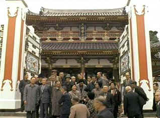

| Inland Sea,
The/B,B |
| Image/1992/56/FS
1.33 |
The
Inland Sea
is a poetic vision of Japan seen through the eyes of writer and Kurosawa film expert Donald Richie.
Based on the book Richie wrote in the early sixties, the extensive narration is derived from that
text. Richie himself narrates this journey through the inlets of Japan's bucolic Inland Sea.
 |
| A group of Japanese tourists gather at a
temple replica. ©Image |
This is a very personal view of Japan, it's people and its landscape. Richie is a fine, clear and
patient speaker. There's an undercurrent of the elegiac in Richie's prose, but overall this a
pragmatically poetic vision. Richie includes scenes of modern Japan encroaching into the landscape
of the Inland Sea islands. Coffee shops and enclosed shopping streets share space with timeless
shrines.
I don’t think there is anything especially magical about the filming. It’s
often picturesque. There are lots of long shots of island formations within the seascape. A few old
temples are visited as Richie tries to bring himself closer to the essence of the Japanese. Richie
calls the Japanese a sea people, finding them out of their element in the cramped confines of the
big cities. I did not find that I discovered anything on this journey with Richie. A grander scope,
particularly in the photographic department, might have made a more dynamic film. The music is evocative of the mystery of Japan. Kurosawa collaborator
Takemitsu wrote the score, highlighting the stark landscapes with his style of simple and magical
chords.
The DVD is a solid, yet uninspired transfer. Images are clear and clean, but
lack a sense of visual power. They are obviously limited by the roar material. There are no evident
disruptive artifacts. Color is clean. A tad more contrast would have been preferable. The
Dolby Digital 2.0 surround is minimally enveloping. Richie's narration is clear and the spare tones
of Takemitsu's score float above the views, hanging and haunting.
|
|
|
|

Selections from the Feature Archive include articles on
Akira Kurosawa, Frank
Darabont, Blonde Bimbos, Hollywood Street Gangs, or Vietnam: The
Hollywood Pariah, and many more....

Click on the image above for as original view of Akira Kurosawa's work

The
Movie Poster Archive include extensive poster images from the films of stars like Susan Hayward,
Kirk Douglas, Katharine Hepburn and many more. Our featured star is Spencer Tracy.
 
DVDPlanet is the DVD
incarnation of legendary laser retailer Ken Crane's. Deep discounts and serious service.
 Kinoeye Archive Kinoeye Archive
This is a resource of all content-rich
materials on the web relating to Central and East European cinema. The ultimate aim of the Kinoeye
Archive is to provide a near-as-damn-it definitive index of intelligent and thoughtful
English-language analysis of Central and Eastern European cinema on the web.
 Images is a
non-commercial Web site created for everyone who enjoys movies and popular culture. Images is
published quarterly; however, new reviews will appear each week, so check back often. Images is a
non-commercial Web site created for everyone who enjoys movies and popular culture. Images is
published quarterly; however, new reviews will appear each week, so check back often.
|